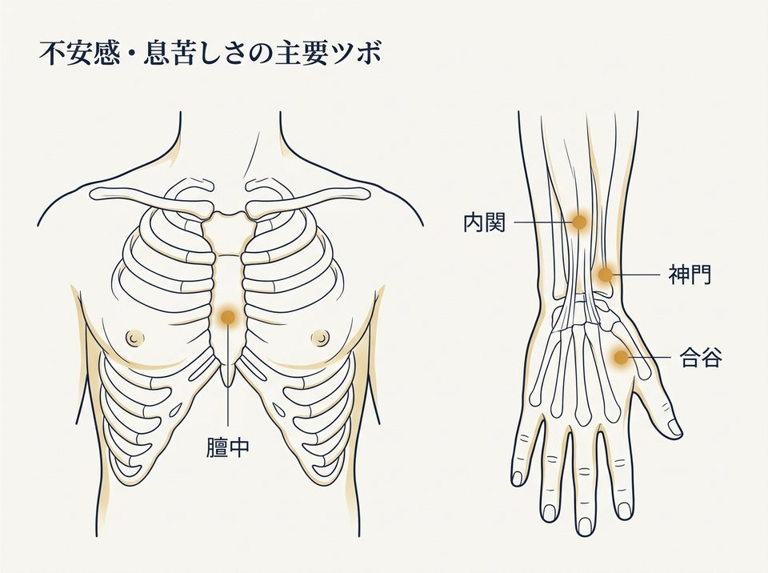

空の巣症候群の鍼灸
子どもの独立により役割喪失感や抑うつ・身体不調が生じる状態。専門相談と並行し、大敦等で自律神経と倦怠感を穏やかに整えます。


院長YouTube解説・関連動画
空の巣症候群では心にも体にも不調が現れる
空の巣症候群では心にも体にも不調が現れます。体に現れる症状は、食欲不振や動機、息切れ、強い倦怠感や疲労感、吐き気や頭痛などです。
心に現れる症状は、喪失感や虚無感、無気力、急に涙が出る、強い孤独を感じるなどです。
空の巣症候群では、色々な症状が現れます。洗われる症状も程度も人によって違いますが、ストレスとなって溜まってしまうとうつ病になることもあります。
空の巣症候群は、成人した子どもが家を離れることによって親が経験する心理的な反応です。この症候群は病気ではありませんが、人生のこの段階で親が感じることがある一連の感情を表します。症状は個人によって異なりますが、以下に典型的なものを挙げます。
・感情的な症状
悲しみ: 子どもの独立は喜ばしい成長の一歩であるにも関わらず、親は自宅を離れる子どもに対して強い悲しみを感じることがあります。
寂しさ: 家が静かになり、子どもの日常の存在がなくなることで、深い孤独感を覚えることがあります。
不安: 子どもが自分で生活していけるか、安全かどうかについて過度に心配することがあります。
目的喪失感: 子育てが主な日々の活動だった親は、自分の役割が終わったと感じ、生活における目的を見失うことがあります。
・身体的な症状
睡眠障害: 寂しさや心配事により、眠りが浅くなるか、眠りにつきにくくなることがあります。
食欲不振または過食: 感情的な問題が食欲に影響を与えることがあります。
エネルギーの減少: 悲しみや不安により、日常活動に対するエネルギーが落ちることがあります。
・行動的な症状
過度の連絡: 子どもに対して頻繁に電話やメッセージを送るなど、過度に連絡を取ろうとすることがあります。
趣味や活動への関心喪失: 以前楽しんでいた趣味や社会活動への関心が薄れることがあります。
社会的な引きこもり: 社会的な活動や友人との交流を避けるようになることがあります。
空の巣症候群に効果的なツボ
・厥陰兪
大敦は、イライラした時に効果的なツボです。そのため、空の巣症候群でストレスを抱えているときに刺激をすることがおすすめのツボなのです。
他にも、目眩やだるさを和らげる効果もあります。大敦への刺激は肝機能を高める効果もあるため、二日酔いにも効果的であるとされています。
心兪のツボの名前の由来は、心の気が巡って体表に現れる場所であることだと言われています。
心兪は、ノイローゼやヒステリーや疲れなどに効果を発揮します。そのため、空の巣症候群の症状も和らげる効果が期待できるのです。
背中にあるツボのため、背中の凝りによって首の痛みや腕の痛みが現れている時にも効果的です。
厥陰兪は、むかつきや嘔吐、ストレス、疲れ、更年期障害などに効果的なツボです。ストレスによって食べ過ぎてしまう時にも刺激をすることで、気持ちが和らぎ食べ過ぎを防いでくれると言われています。
さらに、バスト周りの血行をよくする働きもあるため、バストアップや母乳の出をよくするためにも役立つツボです。
▼ 詳しく知りたい項目だけタップして開けます（全項目の医学解説を収録）
01. 原因とメカニズム
なぜ症状が起きるのか・鍼灸の作用機序を読む
▼
01. 原因とメカニズム
なぜ症状が起きるのか・鍼灸の作用機序を読む
空の巣症候群は、子どもの自立や独立を契機に「自分の役割が終わった」という強い空虚感や喪失感を抱き、抑うつ・不安・不眠・めまい・だるさなどが現れる状態で、適応障害の一つとして捉えられます。子育てに熱心に向き合ってきた方ほど陥りやすく、ちょうど更年期のホルモン変動期と重なることも多いため、必要に応じた心療内科・婦人科受診と自律神経・生活リズムの立て直しが重要です。
なぜ鍼灸で改善へ向かうのか？（作用機序の図解）
空の巣症候群に対する鍼灸は、体性-自律神経反射による交感・副交感神経の切替機序を通じて、お体本来の回復力を引き出します。
首肩・みぞおち・手足の過緊張ポイントへ、交感神経を刺激しすぎない優しい刺激を行います。
体性-自律神経反射を通じて脳幹の迷走神経核へ働きかけ、心拍変動（HF/SDNN）を整えます。
過剰なコルチゾール分泌や過覚醒状態を落ち着かせ、深い呼吸と入眠スイッチを引き出します。
「活動（昼）」と「休息（夜）」のメリハリが戻り、動悸・不眠・倦怠感の波が穏やかになります。
02. よくあるお悩み
このような症状はありませんか？（4項目）
▼
02. よくあるお悩み
このような症状はありませんか？（4項目）
- ✓子どもの進学や独立後から強い空虚感や寂しさ・無気力が続いている
- ✓理由なく涙が出る、眠れない、めまいや強いだるさを感じる
- ✓更年期と重なりほてり・動悸・肩こりなど自律神経症状がつらい
- ✓これから自分の時間をどう過ごせばよいか分からず不安が大きい
03. 当院の施術アプローチ
施術の進め方・改善のポイントを見る
▼
03. 当院の施術アプローチ
施術の進め方・改善のポイントを見る
04. ツボ詳細・セルフケア一覧
婦人科・妊活・更年期・産後ケアのツボ図解（6穴）
▼
04. ツボ詳細・セルフケア一覧
婦人科・妊活・更年期・産後ケアのツボ図解（6穴）
実際の施術ではお一人おひとりの体質・症状に合わせて選穴しますが、月経痛・子宮内膜症・更年期障害・不妊/IVF・産後ケアの全身調整の臨床でよく用いられる代表的なツボの目安です。
| ツボ名 | 位置の目安 | 主な狙い | セルフケアの注意点 |
|---|---|---|---|
| 気海（きかい） | おへそから指2本分下 | 下腹部の巡り・月経前のだるさや冷えケア | 妊娠中・胚移植後は腹部への強い刺激を避けます。 |
| 関元（かんげん） | おへそから指4本分下 | 子宮・卵巣周囲の骨盤内血流サポート | 月経痛や冷えが強い時期の温灸が心地よいツボです。 |
| 血海（けっかい） | 膝のお皿の内上角から指3本分上 | 骨盤内のうっ血緩和・月経痛やPMSの軽減 | 太もも内側を優しくほぐすように押します。 |
| 三陰交（さんいんこう） | 内くるぶしの上から指4本分上 | 女性の三大経絡が交わる最重要穴（月経・更年期・睡眠） | 妊娠初期〜中期は強い刺激を避け専門家に相談してください。 |
| 太渓（たいけい） | 内くるぶしとアキレス腱の間 | ホルモンバランス・ほてりと冷えの調整・卵巣予備能サポート | 足首を温めながら穏やかに刺激します。 |
| 太衝（たいしょう） | 足の甲、親指と人差し指の骨の間 | PMSのイライラ・ストレス性の周期乱れ・不安感緩和 | 深呼吸しながら3〜5秒ずつ押して離します。 |
05. 医学的根拠・国際査読論文（PubMed / Cochrane）
科学的エビデンス・出典リンク一覧（4件）
▼
05. 医学的根拠・国際査読論文（PubMed / Cochrane）
科学的エビデンス・出典リンク一覧（4件）
国際的な医学データベース（PubMed・Cochrane等）で報告されている月経痛・子宮内膜症・更年期障害・不妊/IVF・産後ケアの全身調整領域の代表的な査読済み鍼灸研究をまとめています（標準治療との併用や研究上の限界を含めて正確に掲載）。
| 年・研究デザイン | 対象・規模 | 主な結果 | 限界・出典 |
|---|---|---|---|
| 2025年 メタ解析 | 自律神経不調を伴う疾患 10 RCTs（n=744） | 全体適応力指標SDNNが有意改善（MD 13.59, p=0.0091）、重篤な有害事象ゼロ。 | LF・HF・LF/HFは有意差なし、異質性高。 Front Neurosci (PMID: 41230507) |
| 2023年 メタ解析 | 手技鍼 vs シャム鍼 9 RCTs | 実鍼群でのみ施術前後の副交感神経指標HFおよびLF/HF比が有意変化。 | 一次研究の質・異質性にばらつきあり。 Complement Ther Med (PMID: 36494036) |
| 2024年 RCT | 食後愁訴症候群（PDS）解析51名 | 症状反応率（p=0.001）、迷走神経活性HF上昇（p≤0.001）、LF/HF低下（p≤0.001）。 | 単施設・小規模（脳腸相関の根拠）。 Chin Med (PMID: 39568071) |
| 2022年 国内RCT | 更年期女性 48名（日本式鍼7穴×4週） | 鍼群の79%で心拍数が5%以上低下（P<0.01）、鍼中のHF上昇・起立時LF/HF低下を確認。 | 更年期女性限定・4週間の短期評価。 Med Acupunct (PMID: 36311889) |
参考文献・出典
- 2025年 メタ解析（自律神経不調を伴う疾患 10 RCTs（n=744））— Front Neurosci (PMID: 41230507)
- 2023年 メタ解析（手技鍼 vs シャム鍼 9 RCTs）— Complement Ther Med (PMID: 36494036)
- 2024年 RCT（食後愁訴症候群（PDS）解析51名）— Chin Med (PMID: 39568071)
- 2022年 国内RCT（更年期女性 48名（日本式鍼7穴×4週））— Med Acupunct (PMID: 36311889)
06. よくある質問（FAQ）
よくあるご質問を見る（2件）
▼
06. よくある質問（FAQ）
よくあるご質問を見る（2件）
Q. うつ病や更年期障害との違いはありますか？
空の巣症候群は更年期のホルモン変化やうつ病と重なって現れることも多いため、つらさが続く場合は婦人科や心療内科で一度ご相談いただくと安心です。
Q. 自宅でできるケアはありますか？
足の親指側にある「大敦」の優しい刺激や温め、規則正しい睡眠と軽い外出習慣など、少しずつご自身の楽しみを増やすケアをおすすめしています。
あわせて読まれる関連疾患（自律神経のお悩み）
入眠困難や中途覚醒などが続き日中の不調を招く状態です。自律神経の過緊張を鎮め、心身が休息しやすい環境を補完的に整えます。
特定のストレス因子により心身の不調が生じる適応障害。専門医の治療と休養を前提に、脳の過敏性と自律神経の乱れを補完的に整えます。
昼食時に一人になることへの強い不安や対人プレッシャーで心身が緊張する状態。必要に応じた相談と並行し、膻中等で自律神経を整えます。
身近な人との情緒的な共感の乏しさと周囲の無理解から心身が疲弊する状態。心理支援と並行し、百会・期門等で自律神経と倦怠感を整えます。
抗うつ薬等の影響で脳内セロトニンが過剰になり発症する急性薬物障害。救急医療が絶対最優先で急性期は鍼灸対象外です。
夫（またはパートナー）の言動への慢性ストレスから心身に不調が出る状態。適切な距離感づくりと自律神経ケアで心身の負担を和らげます。
CLINICAL RECOVERY CASES
✨ 実際の臨床改善事例・回復経過を見る
銀座本院をはじめ各院での実際の改善事例を症状別に絞り込んでご確認いただけます。
おひとりで悩まず、まずはご相談ください
銀座本院・川口・大宮・横浜・博多・田無の各院でご予約を承っております。